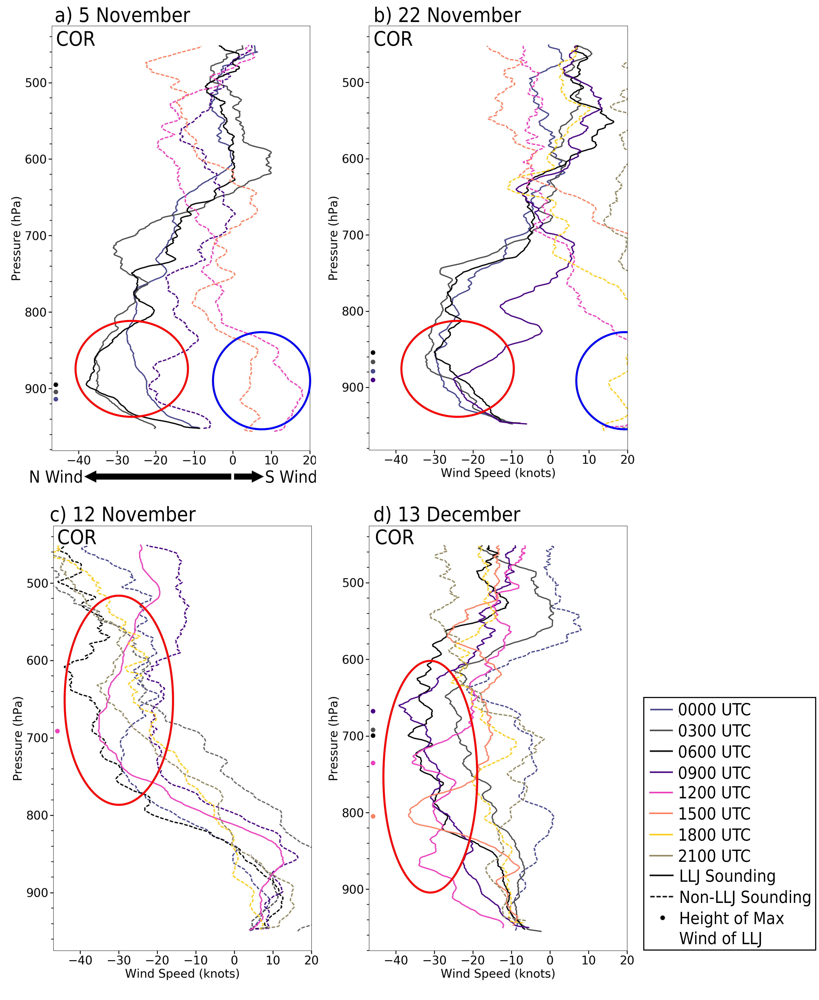

Research
Upscale Growth in Central Argentina
The large-scale environments which favor upscale growth (organization) of convective storms are generally well understood. However, there is still a lot to learn about the local environment and how differences on smaller scales affect convective organization.
My research focused on understanding the environmental conditions that lead to convective upscale growth in Central Argentina, a global hotspot for intense and rapidly organizing convective storms. Using a combination of observations from the RELAMPAGO field campaign and high-resolution convection-permitting simulations, I investigated how this local environment impacts the rate of organization, particularly focused on the role of the South American Low-Level Jet (SALLJ). This work is made up of four parts described below:


SALLJ Variability
The South American Low-Level Jet (SALLJ) is a key feature of the regional climate, transporting warm, moist air from the Amazon basin into Central Argentina. Using high temporal observations from the RELAMPAGO field campaign, I characterized the variability of the SALLJ, including its diurnal cycle, vertical structure, and relationship with synoptic-scale features.
Relevant Publication: Sasaki, C. R. S., A. K. Rowe, L. A. McMurdie, and K. L. Rasmussen, 2022: New Insights into the South American Low-Level Jet from RELAMPAGO Observations. Mon. Wea. Rev., 150, 1247-1271, https://doi.org/10.1175/MWR-D-21-0161.1

SALLJ Influence on Convective Environment
Building on the observational analysis, I used a 6.5-month convection-permitting WRF simulation to investigate how the SALLJ influences the convective environment in Central Argentina. This work examined how jet-related moisture transport and low-level wind shear create conditions favorable for deep convection.
Relevant Publication: Sasaki, C. R. S., A. K. Rowe, L. A. McMurdie, A. Varble, and Z. Zhang, 2024: Influences of the South American Low-Level Jet on the Convective Environment in Central Argentina Using a Convection-Permitting Simulation. Mon. Wea. Rev., 152, 629-648, https://doi.org/10.1175/MWR-D-23-0122.1

Observed Upscale Growth
The RELAMPAGO field campaign provided an unprecedented opportunity to observe convective upscale growth in Central Argentina. I used a combination of radars, soundings, and surface observations to analyze environmental conditions during two specific deployments and identify key ingredients impacting the rate of upscale growth.
Relevant Publication: Sasaki, C. R. S., A. K. Rowe, and L. A. McMurdie, 2025: Environmental Conditions Leading to Observed Convective Organization in Central Argentina. Mon. Wea. Rev., 153, 2415-2435, https://doi.org/10.1175/MWR-D-24-0183.1

Simulated Upscale Growth Environments
To complement the observational analysis and expand beyond the limited observational network, I used a high-resolution convection-permitting simulation to quantify the local thermodynamic and dynamic environment during initial upscale growth. This work identified key environmental differences between storms that undergo rapid upscale growth versus those that remain isolated.
Relevant Publication: Sasaki, C. R. S., A. K. Rowe, L. A. McMurdie, A. Varble, and Z. Zhang, 2026: Initial Upscale Growth Environments in Central Argentina from a Convection-Permitting Simulation. J. Geophys. Res. Atmos., 131, e2025JD044251, https://doi.org/10.1029/2025JD044251
Impact of Energy Generation Composition on Future Climate
Natural gas has been proposed as a "transition" fuel toward renewables, prompting research into its leak rates and climate impact. This study used a simplified atmospheric climate model, based on the Absolute Global Temperature Potential metric and life cycle emissions equations, to evaluate whether a natural gas "bridge" would reduce peak temperatures, slow warming rates, or lower long-term temperatures. It also examined whether building transition gas plants could slow the shift to renewables. Simulations used projected electricity production estimates and also included fully-renewable transition scenarios.
We found that the value of natural gas bridging depends heavily on the metric used: peak temperature, rate of temperature change or long-term temperature. At moderate-to-high leak rates, a transition to natural gas would likely accelerate near-term warming regardless of how quickly renewables are adopted. At lower leak rates, benefits are modest within this century but more significant over longer time horizons.
Relevant Publication: Sasaki, C. R. S., 2018: Exploring the Impacts of Electricity Generation Composition on the Future Climate. Undergraduate Honors Thesis, Department of Atmospheric Sciences, Cornell University, 32pp. [link to file]
Impact of Glyphosate on Beneficial Bacteria in the Rhizosphere
We investigated the growth and metabolic responses of growth-promoting bacterial species (soil Pseudomonas) in the presence of a widely used broad-spectrum herbicide, glyphosate. Growth responses were species- and strain-dependent, P. protegens and P. fluorescens showed no growth impairment even at high glyphosate doses, while the two P. putida strains exhibited significant growth inhibition, particularly at high doses where growth was completely suppressed. Mechanistically, glyphosate appeared to suppress the shikimate pathway, disrupting the production of aromatic amino acids. In short, glyphosate can interfere with the growth of certain beneficial soil bacteria, but it is species and concentration dependent.
Relevant Publication: Aristilde, L., M. L. Reed, R. A. Wilkes, T. Youngster, M. A. Kukurugya, V. Katz, and C. R. S. Sasaki, 2017: Glyphosate-induced specific and widespread perturbations in the metabolome of soil Pseudomonas species. Front. Environ. Sci., 5, 1–13, https://doi.org/10.3389/fenvs.2017.00034
Education
Professional Experience
- Quantifying the thermodynamic and dynamic environment during the organization of convective storms using a 6.5-month Weather Research & Forecasting (WRF) model run to understand how differences in the environment impact storm characteristics
- Studying the influence of the South American Low-Level Jet on the convective environment
- Characterizing the variability of the South American Low-Level Jet using observations from the RELAMPAGO-CACTI field campaign
- Managed large datasets and presented/published results
- Created climate models to simulate radiative forcing and the corresponding global temperature changes incorporating a variety of economic and emissions scenarios based upon projections of electricity generation makeup and electricity demand
- Skilled in programming in IDL (Interactive Data Language) and using Unix servers; experience in organizing large projects on servers and long-term, multi-file projects
- Worked independently on data analysis and dissemination shift
- Rotated through all office duties (Led morning briefings, wrote Area Forecast Discussions, conducted storm surveys, issuing hydrometeorological forecasts, compiled local storm reports, issued watches and warnings)
- Skilled in use of AWIPS-2 CAVE software: D2D and GFE
- Gained experience in operational meteorology by interpreting radar echoes and routinely using remote meteorological and hydrological observational tools such as Doppler radar (WSR-88D), satellite imagery (including GOES R), surface and upper air observations, and numerical models to assess the atmosphere and produce short- and long-range forecasts
- Wrote report on the radiative budget of the Earth and radiative forcing used in training the Sustainable Aviation Group
- Researched causes of en-route weather delay and wrote report suggesting approaches for forecasting this delay based on various temporal and spatial scales and forecastable meteorological parameters
- Assisted in the creation of indices for the purpose of forecasting meteorological related events (e.g. severe weather, rapid changes in pressure) at airports using METAR/TAF data along with machine learning
- Carried out deterministic forecast verification
- Performed cost benefit analysis of future airspace/engineering projects by modeling incurred delay using NEST (Network Strategic Tool) to model future scenarios and Excel to sort data and present analysis
- Researched the effect of Glyphosate (active pesticide ingredient) and Tallow Amine on the growth rate of P. Putida (a bacteria found in soil that is beneficial to plant growth)
- Mastered many laboratory techniques such as those necessary to keep samples sterile
- Initiated and independently researched project assessing location specific weather alerts through analysis of temperature and precipitation data from the 30 largest cities in the US
- Prepared Excel spreadsheet summarizing the percentile breakpoints for the low temperature, high temperature, precipitation, and snowfall for each month for each city
- Analyzed conferences which represented potential business development opportunities
- Researched companies that could use weather data services
Awards & Honors
Teaching Experience
- Invited Speakers from academia, the public sector, and private industry
- Facilitated presentations and discussions
- Created simple quizzes based on lectures
- Taught review of material learned in class each week
- Wrote quizzes to test students’ comprehension
- Managed students’ grades
Talks & Presentations
Commmunity Engagement
Projects
Case Study: Convective Classifications using CSAPR Radar
This project was completed with Alyssa Mathews at PNNL.